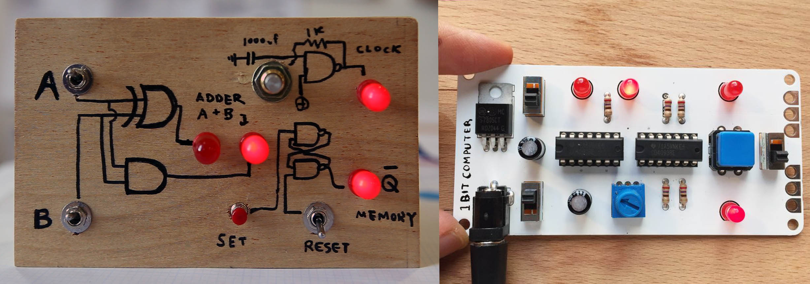
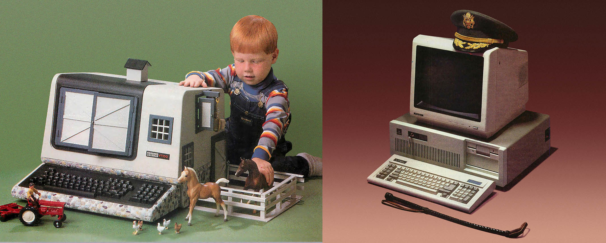
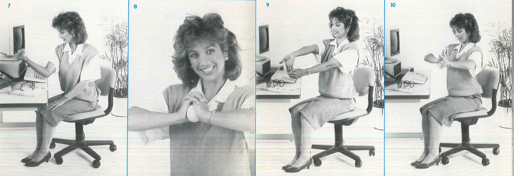
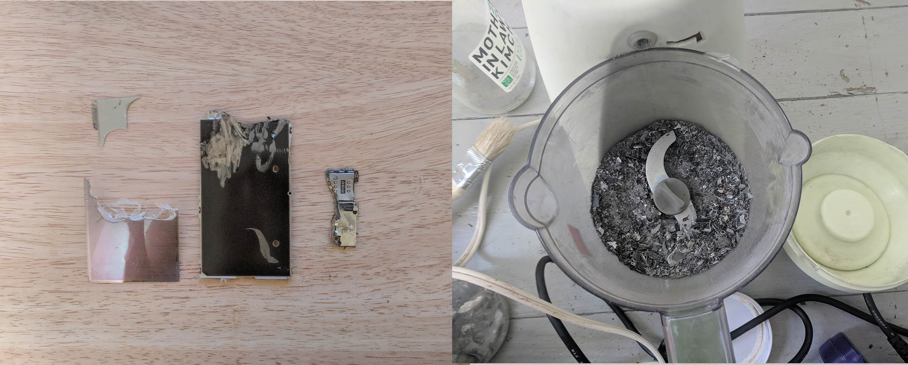

Schedule:
Unit 1: Tinkering and Processing
February 6: Homebrew and the Counterculture: Origins of Personal Computing
How did the computer move from the laboratory to the garage? This unit looks at the hobbyists and homebrew origins of the earliest microcomputers form the mid 1970s. In-Class Historical Artifacts Analysis: Whole Earth Catalog; Homebrew Computer Club Newsletter Issue #6 August 20, 1975; Dr Dobb's Journal of Computer Calisthenics & Orthodontia February 1976.
- Selection from “Chapter 10: The Shaping of the Personal Computer,” Computer: A History of the Information Machine. Martin Campbell-Kelly, William Aspray, Nathan Ensmenger, and Jeffrey Yost. 3rd Edition. Boulder, CO: Westview Press, 2014.
Pgs. 229-238.
- Petrick, Elizabeth. “Imagining the Personal Computer: Conceptualizations of the Homebrew Computer Club 1975-1977.” IEEE Annals of the History of Computing. Vol. 39, No. 4. Oct-Dec 2017, pp 27-39.
- Ian Litterick and Chris Smithers, How Computers Work, Hodder Wayland (1983). pgs 1-27.
Additional Reading:
- Turner, Fred. From Counterculture to Cyberculture: Stewart Brand, the Whole Earth Network, and the Rise of Digital Utopianism. Introduction and Chapter 1. Chicago, IL: University of Chicago Press (2006) pp 1-39.
- Brand, Stewart. "Spacewar: Fanatic Life and Symbolic Death among the Computer Bums." Rolling Stone 7 (1972): 50-58.
- Walter Isaacson, The Innovators: How a Group of Hackers, Geniuses, and Geeks Created the Digital Revolution, Simon and Schuster (2014). Chapter 8, pp. 263-312.
February 13: From 0-1: An Intro to Electronics and Binary Logic
This hands-on lab introduces students to the basics of electricity, circuits and binary logic.
- Choi, Taeyoon, Skating the Circuits, Handmade Computer (2017).
- Choi, Taeyoon, Binary Logic, Handmade Computer (2017). Read up to but not including the section titled Binary Numbers.
- Altair 8800 Operators Manual (1975), pp. 1-8.

/*---TAEYOON CHOI, HANDMADE COMPUTER (2015)---*/
Additional Reading:
- Petzold, Charles. Code: The hidden language of computer hardware and software. Microsoft Press, 2000. Chapter 4 “Anatomy of a Flashlight”.
- Scherz, Paul. Practical electronics for inventors. McGraw-Hill, Inc., 2006. Chapter 3.
Unit Two: Chips, Bits and Bytes
February 20: Beyond Hackers and Hobbyists: The Computer Goes Home
How does the idea of the personal computer transition from being a highly technical device to an appliance that non-programmers felt comfortable having in their own home? In-Class Historical Artifacts Analysis: Apple II/IIe (1977, 1983); Apple IIc (1984); Computers for Everybody: 1984 Buyer’s Guide; Apple II advertising (late 70s-early 1980s).
- Time, Machine of the Year, “The Computer Moves In,” January 3, 1983.
Selection from “Chapter 10: The Shaping of the Personal Computer,” Computer: A History of the Information Machine. Martin Campbell-Kelly, William Aspray, Nathan Ensmenger, and Jeffrey Yost. 3rd Edition. Boulder, CO: Westview Press, 2014. Pgs.
238-249.
- Alvin Toffler. The Third Wave. Bantam Books, 1981. Introduction and Chapter 1. pp 1-18.
Additional Reading:
- Freiberger, Paul and Michael Swaine, Fire in the Valley: The Making of the Personal Computer, Osbourne/McGraw-Hill (1984). Selections from Chapter 6 “Retailing the Revolution” pp. 157-187.
February 27: Counting, Encoding & Decoding
This hands-on lab introduces students to the BASIC programming language. We will also overview binary and hexadecimal numbers and character encoding systems such as ASCII.
- Petzold, Charles. Code: The hidden language of computer hardware and software. Microsoft Press, 2000. Chapter 8 “Alternatives to 10”.
Additional Reading:
- Petzold, Charles. Code: The hidden language of computer hardware and software. Microsoft Press, 2000. Chapter 9 “Bit by Bit by Bit”.
Unit 3: Software Foundations
This unit explores the role of software and software systems. What is the impact of the mainstreaming of an operating system like MSDOS have in terms of standardization across the industry?
March 6: Compilers, Interpreters & Operating Systems with guest lecturer Ramsey Nasser
- Walter Isaacson, The Innovators: How a Group of Hackers, Geniuses, and Geeks Created the Digital Revolution, Simon and Schuster (2014). Chapter 9: Software, pp: 313-381.
Unit 4:Input/Output
March 13: Desktops and Peripherals
This unit thinks beyond the computer itself and considers the ways it exceeded its own form through peripherals like the mouse and the printer. What were the cultural norms that shaped these interactions? In-Class Historical Artifacts Analysis: Apple Macintosh w/ Mouse (1984); Apple Imagewriter II (1985)
- Selection from “Chapter 11: Broadening the Appeal,” Computer: A History of the Information Machine. Martin Campbell-Kelly, William Aspray, Nathan Ensmenger, and Jeffrey Yost. 3rd Edition. Boulder, CO: Westview Press, 2014. Pgs. 253-267.
Atkinson, Paul. "The best laid plans of mice and men: the computer mouse in the history of computing." Design Issues 23.3 (2007): 46-61.

/*---JENNY ODELL, NEOSURREAL (2017)---*/
March 20: Spring Break!
March 27: Arduino, Microcontrollers and Serial Communications
Hands on lab introducing the possibilities microcontrollers offer for designing computer peripherals.
- Igoe, Tom. “Microcontrollers: The Basics.” Web blog post. ITP Physical Computing Blog, New York University, July 16, 2014
Additional Reading:
- Massimo, Banzi. "Getting started with Arduino." Make: Books (2011).
Unit 5: The Body Computational
April 3: Use, Design and the Body
How has the computer impacted the body? How have bodies had to change to accommodate life with computers? In-Class Historical Artifacts Analysis: Home Offices and Workspaces (1986); INMAC Office Supply Catalog 1984; Roy Mason, Xanadu: The Computerized Home of Tomorrow and How it Can Be Yours Today! Acropolis Books (1983).
- Shoshana Zuboff, In the Age of the Smart Machine: The Future of Work and Power, Chapter 4 “Office Technology as Exile and Integration,” Basic Books (1984) pp. 124-159.
- Petrick, Elizabeth. Making Computers Accessible: Disability Rights and Digital Technology. Selection from “Chapter 2: Early Personal Computing Accessibility, 1980-1987.” Baltimore, MD: Johns Hopkins Press (2015) pp. 35-47.
- Tone Up at the Terminals: An Exercise Guide for High-Tech Automated Office Workers. New York State Library. Date estimated late 1980s.
Additional Reading:
- Atkinson, Paul. "Man in a briefcase: the social construction of the laptop computer and the emergence of a type form." Journal of design history 18.2 (2005): 191-205.

/*---DENISE AUSTIN, TONE UP AT THE TERMINAL (late 1980s)---*/
April 10: Pitch Presentations and Next Steps
In-Class Pitch Brief Due
Annotated Bibliography Due
- Dunne, Anthony, and Fiona Raby. Speculative everything: design, fiction, and social dreaming. MIT press, 2013. Chapter 3, Design as Critique.
Unit 6: The Computer Supply Chain
How has computation impacted environments and shaped global supply chains?
April 17: E-Waste Field Trip
Field trip to the
Gowanas E-waste Center run by Lower East Side Ecology Center.
- Nathan Ensmenger, “The Environmental History of Computing.” Technology and Culture 59, no. 5 (2018): S7-S33.
Additional Reading
- Sterne, Jonathan. "Out with the Trash: On the Future of New Media." Residual Media. University of Minnesota Press, 2007. pp 16-31.

/*---INGRID BURRINGTON, ALCHEMY STUDIES (2019)---*/
April 24: 1st Prototypes and In-Class Crit
May 1: Guest Artist and Project Checkup
May 8: Final Presentations
Final artifact due and final project written documentation due.